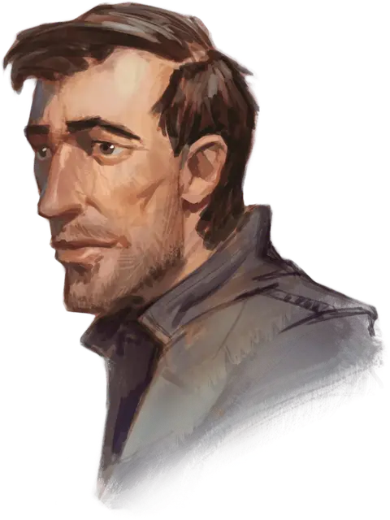

Джалестр Сильвермейн
Jalester Silvermane
Средний Гуманоид (Человек), законно-добрый, именной НИП

Класс Доспеха 18 (кольчуга, Жетон Дозора)
Хиты 71 (13к8 + 13)
Скорость 30 футов
| мод | спас | ||
|---|---|---|---|
| СИЛ | 14 | +2 | +4 |
| ЛОВ | 14 | +2 | +2 |
| ТЕЛ | 13 | +1 | +3 |
| мод | спас | ||
|---|---|---|---|
| ИНТ | 12 | +1 | +1 |
| МДР | 14 | +2 | +2 |
| ХАР | 13 | +1 | +1 |
Навыки Атлетика +4, Выживание +4
Чувства пассивное Восприятие 12
Языки Общий, Эльфийский
Опасность 4 (1100 опыта)
Бонус мастерства +2
Особенности
Особое снаряжение. Джалестр носит жетон Дозора [badge of the Watch].
Второе дыхание (перезарядка после короткого или продолжительного отдыха). Бонусным действием Джалестр может восстановить 16 (1к10 + 11) хитов.
Действия
Мультиатака. Джалестр совершает две атаки оружием.
Длинный меч. Рукопашная атака оружием: +4 к попаданию, досягаемость 5 футов, одна цель. Попадание: Рубящий урон 6 (1к8 + 2) или 7 (1к10 + 2) рубящего урона при ударе двумя руками.
Кинжал. Рукопашная или Дальнобойная атака оружием: +4 к попаданию, досягаемость 5 футов или дистанция 20 / 60 футов, одна цель. Попадание: колющий урон 4 (1к4+2).
Реакции
Контратака. Когда существо, которое Джалестр видит, промахивается по нему рукопашной атакой, он может использовать реакцию, чтобы совершить рукопашную атаку оружием по этому существу. При попадании цель дополнительно получает 4 урона от оружия.
Описание
Джалестр — серьёзный мужчина, которому ещё нет тридцати. Он родом из далёкого Кормира, где набрался опыта, служа в отряде наёмников под названием «Стальные тени». Несколько лет назад Джалестр покинул Долины и уехал в Глубоководье с однополчанами, среди которых была и его любовь — Фейррель Данблейд.
Эти двое подружились с волшебником Эльминстером, который представил их Лейраль Сильверхенд, а та взяла их на работу как помощников и лазутчиков. Джалестр и Фейррель помогли Явному лорду раскрыть заговор, члены которого хотели свергнуть правительство, но уцелеть удалось только Джалестру. С тех пор Джалестр остался в Глубоководбе и стал полевым агентом Лейраль на службе Глубоководья и Альянса лордов. Он тяжело переживал гибель любви, но теперь хочет начать всё заново.